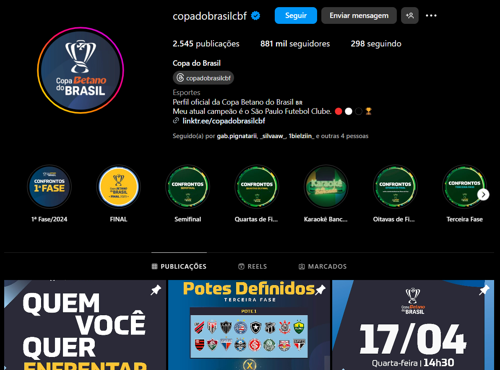

A Copa do Brasil de Futebol, conhecida simplesmente como Copa do Brasil, é uma competição nacional de futebol do Brasil. É jogada nos moldes da Copa da Inglaterra, Taça de Portugal, Copa do Rei, Copa da Escócia, entre outras, sempre no formato "mata-mata", onde o clube derrotado é eliminado da competição.
O funcionamento da Copa do Brasil é marcado por fases eliminatórias, onde os times se enfrentam em jogos de ida e volta. Na primeira fase, equipes de diferentes divisões do futebol brasileiro entram em campo em confrontos diretos, com o objetivo de avançar para a próxima etapa.
ùltimo campeão:
Melhores momentos último campeão:
Outros campeonatos:
| Campeonato Brasileiro | |
| Conmebol Libertadores | |
Conheça o instagram:
